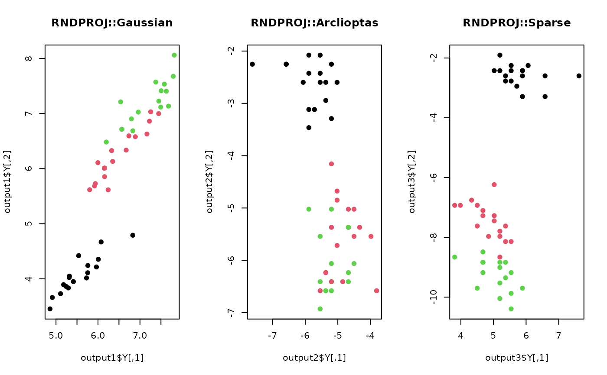

do.rndproj is a linear dimensionality reduction method based on
random projection technique, featured by the celebrated Johnson–Lindenstrauss lemma.
do.rndproj( X, ndim = 2, preprocess = c("null", "center", "scale", "cscale", "whiten", "decorrelate"), type = c("gaussian", "achlioptas", "sparse"), s = max(sqrt(ncol(X)), 3) )
| X | an \((n\times p)\) matrix or data frame whose rows are observations and columns represent independent variables. |
|---|---|
| ndim | an integer-valued target dimension. |
| preprocess | an additional option for preprocessing the data.
Default is "null". See also |
| type | a type of random projection, one of "gaussian","achlioptas" or "sparse". |
| s | a tuning parameter for determining values in projection matrix. While default is to use \(max(log \sqrt{p},3)\), it is required for \(s \ge 3\). |
a named list containing
an \((n\times ndim)\) matrix whose rows are embedded observations.
a \((p\times ndim)\) whose columns are basis for projection.
an estimated error \(\epsilon\) in accordance with JL lemma.
a list containing information for out-of-sample prediction.
The Johnson-Lindenstrauss(JL) lemma states that given \(0 < \epsilon < 1\), for a set \(X\) of \(m\) points in \(R^N\) and a number \(n > 8log(m)/\epsilon^2\), there is a linear map \(f:R^N\) to R^n such that $$(1-\epsilon)|u-v|^2 \le |f(u)-f(v)|^2 \le (1+\epsilon)|u-v|^2$$ for all \(u,v\) in \(X\).
Three types of random projections are supported for an (p-by-ndim) projection matrix \(R\).
Conventional approach is to use normalized Gaussian random vectors sampled from unit sphere \(S^{p-1}\).
Achlioptas suggested to employ a sparse approach using samples from \(\sqrt{3}(1,0,-1)\) with probability \((1/6,4/6,1/6)\).
Li et al proposed to sample from \(\sqrt{s}(1,0,-1)\) with probability \((1/2s,1-1/s,1/2s)\) for \(s\ge 3\) to incorporate sparsity while attaining speedup with little loss in accuracy. While the original suggsetion from the authors is to use \(\sqrt{p}\) or \(p/log(p)\) for \(s\), any user-supported \(s \ge 3\) is allowed.
Johnson WB, Lindenstrauss J (1984). “Extensions of Lipschitz mappings into a Hilbert space.” In Beals R, Beck A, Bellow A, Hajian A (eds.), Contemporary Mathematics, volume 26, 189--206. American Mathematical Society, Providence, Rhode Island. ISBN 978-0-8218-5030-5 978-0-8218-7611-4, doi: 10.1090/conm/026/737400 .
Achlioptas D (2003). “Database-friendly random projections: Johnson-Lindenstrauss with binary coins.” Journal of Computer and System Sciences, 66(4), 671--687.
Li P, Hastie TJ, Church KW (2006). “Very Sparse Random Projections.” In Proceedings of the 12th ACM SIGKDD International Conference on Knowledge Discovery and Data Mining, KDD '06, 287--296.
## use iris data data(iris) set.seed(100) subid = sample(1:150, 50) X = as.matrix(iris[subid,1:4]) label = as.factor(iris[subid,5]) ## 1. Gaussian projection output1 <- do.rndproj(X,ndim=2) ## 2. Achlioptas projection output2 <- do.rndproj(X,ndim=2,type="achlioptas") ## 3. Sparse projection output3 <- do.rndproj(X,type="sparse") ## Visualize three different projections opar <- par(no.readonly=TRUE) par(mfrow=c(1,3)) plot(output1$Y, pch=19, col=label, main="RNDPROJ::Gaussian") plot(output2$Y, pch=19, col=label, main="RNDPROJ::Arclioptas") plot(output3$Y, pch=19, col=label, main="RNDPROJ::Sparse")par(opar)